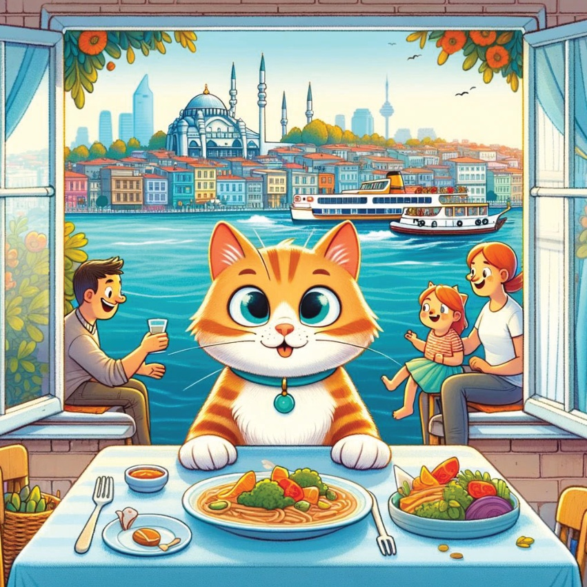
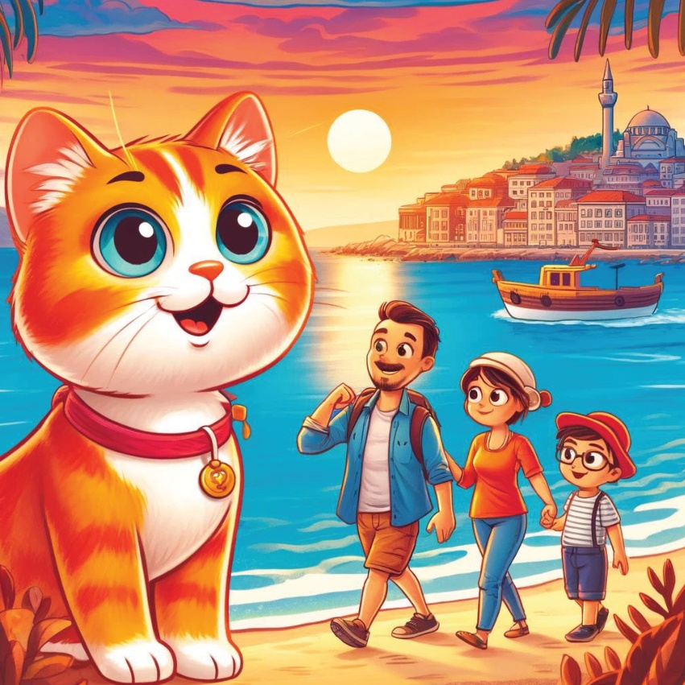
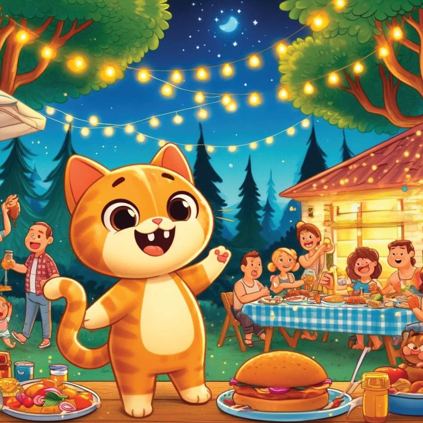
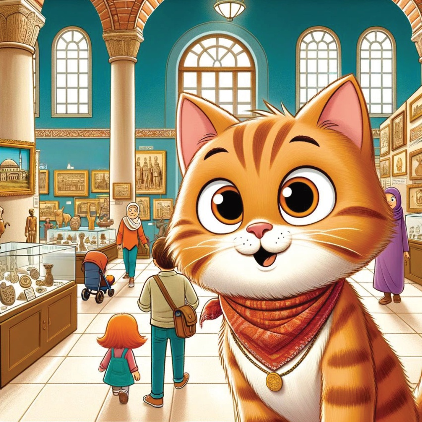
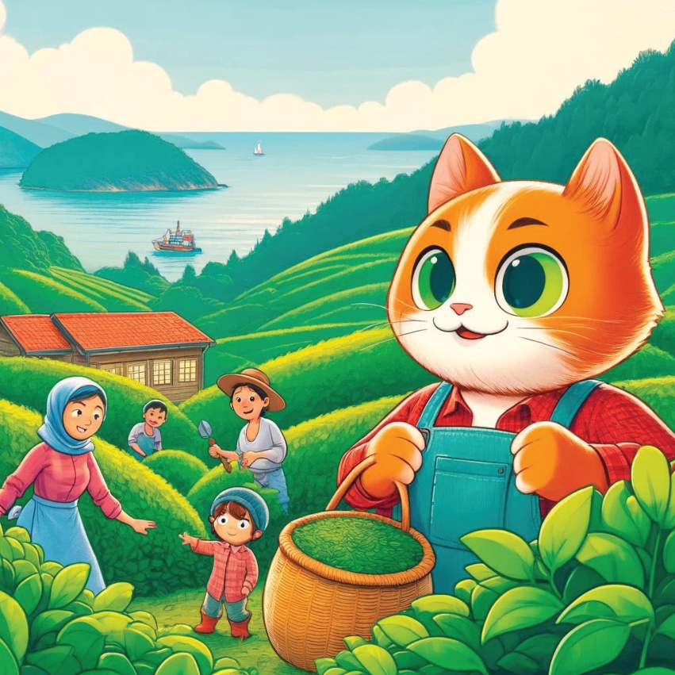
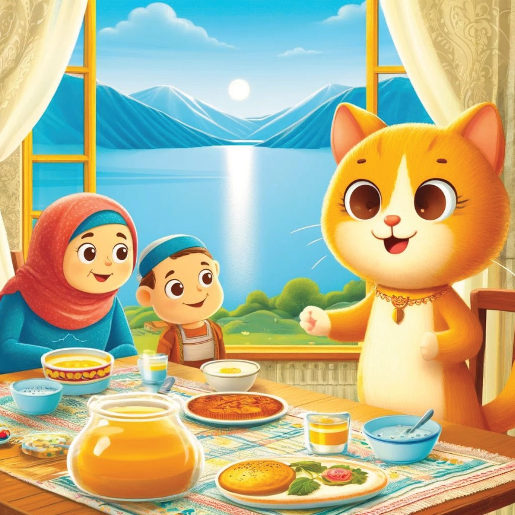
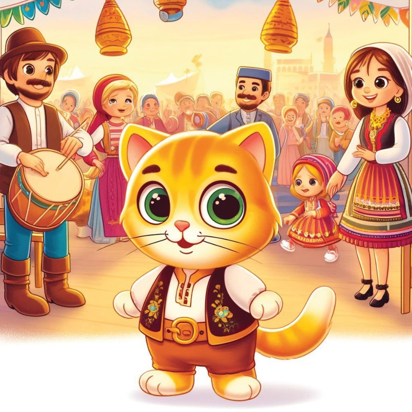

Той беше наоколо, Кармал, малко любопитен котец, искаше да научи за разнообразията на семействата култури в седем райони на Турция. С ентусиазъм в сърцето й и карта в крака си, тя започна нова приключение, за да посети семействата във всяка област.
4
5
Малмара Регион –
Истамбул семейство
Кармел първият им пункт беше в Истамбул,
където посетих семейство, живеещо в оживен квартал.
Тя изпита бързото градско ежедневие и се наслади на уютно семейно вечеря с гледки към Босфора.
6

7
Егейски регион –
Имир семейство
След това Карамил се отправи в Имир,
където престой намери с семейство
в очарователен планински град.
Тя научи за тяхното лекоживовен начин на живот,
приемат свежие риби и
участва в вечерна разходка по брега.
8

9
Сезонно региона -
Анталия, Карамел посети семейство
известно със своята гостоприемност.
Тя се наслади на голям барбекю в градината,
с вкусни храни, музика и смях под звездите.
10

11
Централна Анатолия –
Кемал посетих Ankara,
където живееше семейство в столицата.
Пътешестваше към музеи и исторически места с семейството си,
учене за богатата история на Турция.
12

13
Търбицата зона -
Семейство Карамель
В Тръбзон, в района на Черно море, трагелия на семейството Карамель преживява уникалната култура на региона на Черното море. Тя помогна на семейството да събира чаените листа в зелените, богати гори, и се наслаждава на традиционни ястия от Черно море.
14

15
Селският район в Турция –
Карамел посетихме село Ван,
където се престорил семейство,
известно със своята топлина и доброта.
Приятила е традиционен апетит с ябълков сироп от Карамел и мед, и е обмислила красивия езер Van.
16

17
Сюдажево Анатолия –
Селище в Ширан.
Карамел посетих семейство в Ширан.
Относително тя преживяла богатия културен произход на семейството,
посещаваше местно събитие по музика и танци,
и наслади се на вкусовете на регионале.
18

19
Сърцето й беше пълно с топлина и ума й беше изпълнено с спомени,
Карамел се върна обратно към дома си.
Тя осъзна, че истинската същност на културите на семейството в Турция
отдаваше се на любовта, гостоприемството и радостта,
които споделяха всеки ден.